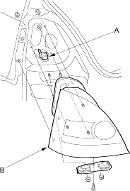
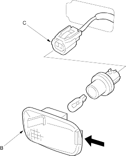

- Remove the rear bumper (see page 20-244).
- Open the tailgate and disconnect the connectors (A) from the taillight (B).
Brake/Taillight: 21/5 W Turn Signal Light: 21 W Back-Up Light: 21 W Rear Fog Light: 21 W (KE model)

- Turn the bulb socket 45º counter-clockwise to remove the bulb socket.
- Remove the mounting nuts and bolts, then remove the taillight.
- When installing the taillight, check for the gasket; if it is distorted or stays compressed, replace it.
- After installing the taillight, run water over the taillight to make sure they do not leak.
- Push the retaining spring (A) and remove the side turn signal light (B).
Side Turn Signal Light: 5W

- Disconnect the 2 P connector (C) from the light.